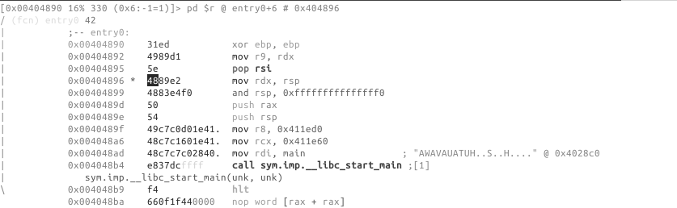
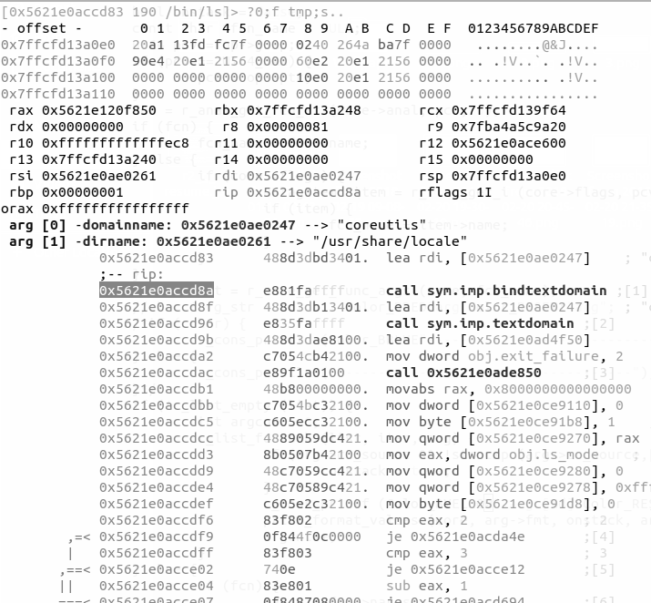

18 Visual Disassembly
18.2 d as define
d can be used to change the type of data of the current block, several basic types/structures are available as well as more advanced one using pf template:
d → ...
0x004048f7 48c1e83f shr rax, 0x3f
d → b
0x004048f7 .byte 0x48
d → B
0x004048f7 .word 0xc148
d → d
0x004048f7 hex length=165 delta=0
0x004048f7 48c1 e83f 4801 c648 d1fe 7415 b800 0000
...To improve code readability you can change how rizin presents numerical values in disassembly, by default most of disassembly display numerical value as hexadecimal. Sometimes you would like to view it as a decimal, binary or even custom defined constant. To change value format you can use d following by i then choose what base to work in, this is the equivalent to ahi:
d → i → ...
0x004048f7 48c1e83f shr rax, 0x3f
d → i → 10
0x004048f7 48c1e83f shr rax, 63
d → i → 2
0x004048f7 48c1e83f shr rax, '?'18.2.1 Usage of the Cursor for Inserting/Patching…
Remember that, to be able to actually edit files loaded in rizin, you have to start it with the -w option. Otherwise a file is opened in read-only mode.
Pressing lowercase c toggles the cursor mode. When this mode is active, the currently selected byte (or byte range) is highlighted.

The cursor is used to select a range of bytes or simply to point to a byte. You can use the cursor to create a named flag at specific location. To do so, seek to the required position, then press f and enter a name for a flag. If the file was opened in write mode using the -w flag or the o+ command, you can also use the cursor to overwrite a selected range with new values. To do so, select a range of bytes (with HJKL and SHIFT key pressed), then press i and enter the hexpair values for the new data. The data will be repeated as needed to fill the range selected. For example:
<select 10 bytes in visual mode using SHIFT+HJKL>
<press 'i' and then enter '12 34'>The 10 bytes you have selected will be changed to “12 34 12 34 12 …”.
The Visual Assembler is a feature that provides a live-preview while you type in new instructions to patch into the disassembly. To use it, seek or place the cursor at the wanted location and hit the ‘A’ key. To provide multiple instructions, separate them with semicolons, ;.
18.3 XREF
When rizin has discovered a XREF during the analysis, it will show you the information in the Visual Disassembly using XREF tag:
; DATA XREF from 0x00402e0e (unk)
str.David_MacKenzie:To see where this string is called, press x, if you want to jump to the location where the data is used then press the corresponding number [0-9] on your keyboard. (This functionality is similar to axt)
X corresponds to the reverse operation aka axf.
18.4 Function Argument display
To enable this view use this config var e dbg.funcarg=true

18.5 Add a comment
To add a comment press ;.
18.6 Type other commands
Quickly type commands using :.
18.7 Search
/: allows highlighting of strings in the current display. :cmd allows you to use one of the “/?” commands that perform more specialized searches.
18.8 The HUDS
18.8.1 The “UserFriendly HUD”
The “UserFriendly HUD” can be accessed using the ?? key-combination. This HUD acts as an interactive Cheat Sheet that one can use to more easily find and execute commands. This HUD is particularly useful for new-comers. For experienced users, the other HUDS which are more activity-specific may be more useful.
18.8.2 The “flag/comment/functions/.. HUD”
This HUD can be displayed using the _ key, it shows a list of all the flags defined and lets you jump to them. Using the keyboard you can quickly filter the list down to a flag that contains a specific pattern.
Hud input mode can be closed using ^C. It will also exit when backspace is pressed when the user input string is empty.
18.9 Tweaking the Disassembly
The disassembly’s look-and-feel is controlled using the “asm.* configuration keys, which can be changed using the e command. All configuration keys can also be edited through the Visual Configuration Editor.
18.10 Visual Configuration Editor
This HUD can be accessed using the e key in visual mode. The editor allows you to easily examine and change rizin’s configuration. For example, if you want to change something about the disassembly display, select asm from the list, navigate to the item you wish to modify it, then select it by hitting Enter. If the item is a boolean variable, it will toggle, otherwise you will be prompted to provide a new value.

Example switch to pseudo disassembly:


Following are some example of eval variable related to disassembly.
18.11 Examples
18.11.0.1 asm.arch: Change Architecture && asm.bits: Word size in bits at assembler
You can view the list of all arch using e asm.arch=?
e asm.arch=dalvik
0x00404870 31ed4989 cmp-long v237, v73, v137
0x00404874 d15e4889 rsub-int v14, v5, 0x8948
0x00404878 e24883e4 ushr-int/lit8 v72, v131, 0xe4
0x0040487c f0505449c7c0 +invoke-object-init-range {}, method+18772 ;[0]
0x00404882 90244100 add-int v36, v65, v0e asm.bits=16
0000:4870 31ed xor bp, bp
0000:4872 49 dec cx
0000:4873 89d1 mov cx, dx
0000:4875 5e pop si
0000:4876 48 dec ax
0000:4877 89e2 mov dx, spThis latest operation can also be done using & in Visual mode.
18.11.0.2 asm.pseudo: Enable pseudo syntax
e asm.pseudo=true
0x00404870 31ed ebp = 0
0x00404872 4989d1 r9 = rdx
0x00404875 5e pop rsi
0x00404876 4889e2 rdx = rsp
0x00404879 4883e4f0 rsp &= 0xfffffffffffffff018.11.0.3 asm.syntax: Select assembly syntax (intel, att, masm…)
e asm.syntax=att
0x00404870 31ed xor %ebp, %ebp
0x00404872 4989d1 mov %rdx, %r9
0x00404875 5e pop %rsi
0x00404876 4889e2 mov %rsp, %rdx
0x00404879 4883e4f0 and $0xfffffffffffffff0, %rsp18.11.0.4 asm.describe: Show opcode description
e asm.describe=true
0x00404870 xor ebp, ebp ; logical exclusive or
0x00404872 mov r9, rdx ; moves data from src to dst
0x00404875 pop rsi ; pops last element of stack and stores the result in argument
0x00404876 mov rdx, rsp ; moves data from src to dst
0x00404879 and rsp, -0xf ; binary and operation between src and dst, stores result on dst